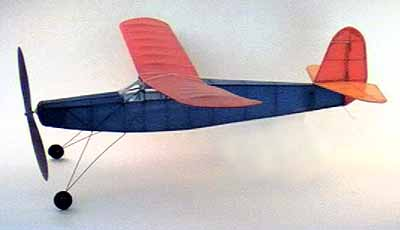

Unfortunately, my Flying Aces Moth has not always looked this good.

| I initially bought the kit from Peck Polymers in May of 1997, and had it ready to go the following weekend. Once I compensated for the heavy plastic prop with a blob of putty on the tail, and added a 3/32" shim under the leading edge of the wing, it flew very well for a number of months. This despite the horrific warps in the stab shown at left. |
|
One morning on the way to the flying field in August of '97, the Moth was severely damaged when my tool box tipped over onto it. The fuselage was crushed, (see right) but thankfully the wings and tail survived. Had the damage been more extensive, I would have likely scrapped it. Instead, I hung the crumpled plane on it's hook, and let it sit, and sit, and... After more than a year of walking by it in such a forlorn state, I pulled it off the wall, and have finally rebuilt it.
Restoration involved slowly stripping the fuselage, regluing broken sticks and glue joints as I went. The torn tissue was holding much of the broken wood in place, and allowed me to rebuild it with only a few new pieces of balsa spliced in. The stab was also replaced with a new flat version, and covered in yellow tissue as there was no orange left in the supply. |
Read about the restored model | Return
Read other comments about the FA Moth.
Return to model index
Copyright 1998, Thayer Syme. All rights reserved